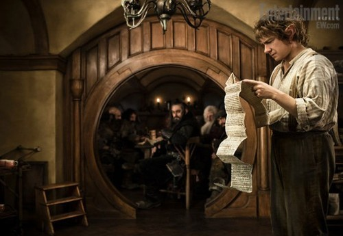

Post #1: Bilbo com a casa invadida por anãos
Aquela é A Montanha? - perguntou Bilbo numa voz solene, olhando para ela com os olhos esbugalhados. Nunca vira algo que parecera tão grande.
- Claro que não! - disse Balin. - Ali é apenas o começo das Montanhas Sombrias, e nós temos que achar um meio de atravessá-las, ou passar por cima ou por baixo delas… […]
- Oh! - disse Bilbo, e naquele mesmo momento sentiu o maior cansaço que lembrava já ter sentido. Estava mais uma vez pensando em sua confortável cadeira diante do fogo, na sala favorita de sua toca, e na chaleira cantando. Não pela última vez.